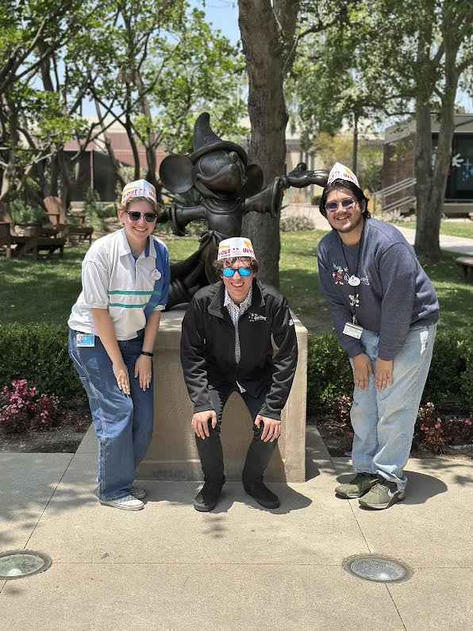
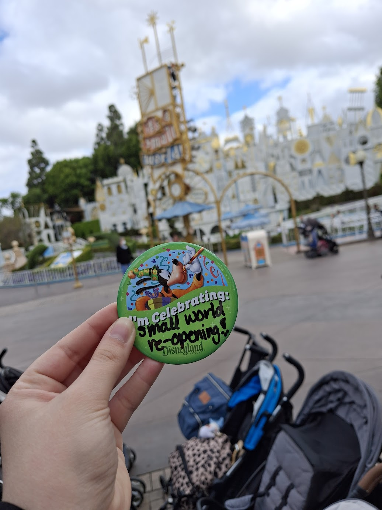
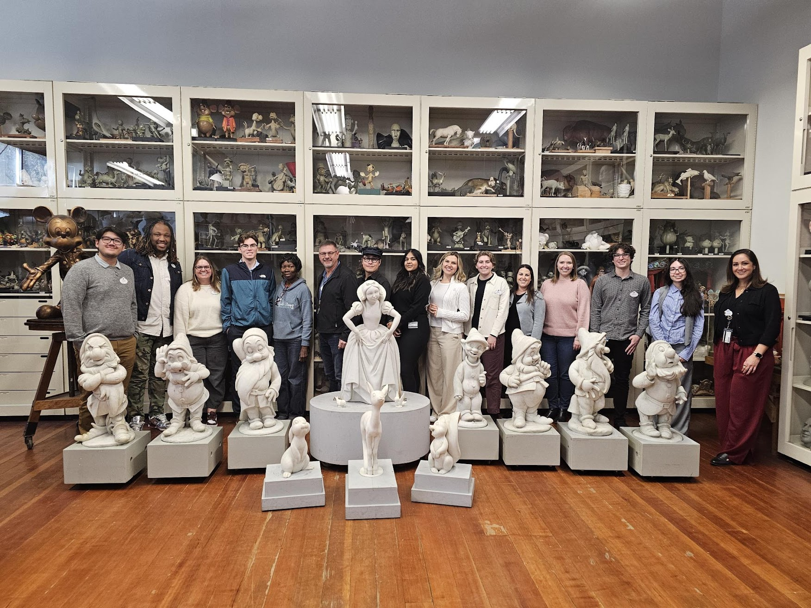

If you're new: Welcome! If you've been here since my Disney newsletters: Welcome back!
While I was at Walt Disney Imagineering this past spring, I sent out newsletters every other week to share my
experiences in my internship. Now that I'm back in school, I'm planning on sending out a newsletter
every 3-4 months just to keep everyone updated on my life!
Academic
In mid-August I moved back into college to start my senior year at the University of Michigan. I'm super
excited to be back and in the swing of things. I'm enjoying my classes about American Drama and Musical
Theater history, and I look forward to starting rehearsals in mid-October for Painless: The Opioid
Musical followed by two workshops with the Department of Musical Theater.
Career
This summer, I was the Sound Script intern at The Muny in St. Louis, MO. Here, I sat in on rehearsals and
marked up the script for the sound engineer so he knew who's mic to turn on while mixing the show. I got
to meet so many incredible people and witness fast-paced, high-caliber theater which was a great learning
experience!
Fun
Football is a big thing at my school, and I've been having so much fun going to the games! I love the
school spirit everyone brings and the performances of the marching band. Every game day, over 110,000 people
gather at The Big House, and I'm so happy I get to be one of those people!
Also, over the summer I began learning HTML and CSS to make my own website, and I just recently published it
to the web! It was such a fun experience to build this from scratch and I'm excited to add more
interactivity as I begin learning JavaScript. You can find my website here: andyblatt.com
That's all I have for this update! Feel free to reach out; I'd love to hear about what's going on in
your life and catch up!
Talk to you soon,
Andy Blatt
WDI Show Lighting Internship
PUT INFO HERE ABOUT MY INTERNSHIP
AND ADD A PHOTO
WDI Newsletter 11 — 5/31-6/6
Hi everyone!
Welcome to the final installment of my WDI newsletters!
My final week here has been great and I'm so sad that today is my last day.
Tuesday and Wednesday I was back in the field at “it's a small world” working on as-built documentation.
This is what we do to ensure that the paperwork is all accurate to what is built in real life so maintenance
has an easier time when something needs to get replaced and we have the information to talk about the
attraction accurately.
Wednesday afternoon, after the Small World shift, Rocco and I went to the Burbank studio lot and met Perry
the Platypus! We also got to see Dan Povenmire (one of the co-creators of Phineas and Ferb) doing an
interview!
There was also an intern dinner on Wednesday that I went to. This was a great opportunity to catch up with
some of the other interns I don't see on a daily basis and see what everyone has been up to lately.
Yesterday was my last trip to Disneyland for the foreseeable future. I got my favorite foods and rode my
favorite rides so overall, a great night! I also got to watch the Wonderous Journeys projection and firework
show which is always a magical experience!
Today was my last day in the office! For lunch, we went to In-N-Out and got some paper hats! When we headed
back to the Imagineering campus we got a photo in front of Sorcerer Apprentice Mickey :)

Here's a list of some of my favorites in case you find yourself visiting Disneyland anytime soon!
Favorite rides:
Indiana Jones
Pirates of the Caribbean
"it's a small world"
Big Thunder Mountain
Favorite Foods:
Bengal Beef Skewer from Bengal Barbecue
Churros
Dole whip (specifically the strawberry and pineapple swirl)
Favorite queue lines:
Indiana Jones
Mickey and Minnie's Runaway Railway
Favorite exit gate:
Pirates of the Caribbean (it's very soft and light to push open)
Honorable mention - least favorite exit gate:
Mickey and Minnie's Runaway Railway (very heavy to push open) (the ride is great though!)
I fly out to St. Louis tomorrow to start my next journey working at The Muny! My plan is to send out
quarterly newsletters to keep everyone in my life updated as I move into my senior year and graduation.
Thank you so much to all of you who have followed along on this journey! I truly could not have done it
without the support of each and every one of you from some point in my life.
Have a magical day!
- Andy Blatt
WDI Newsletter 10 — 5/17-5/30
Hi everyone!
Welcome to the second to last WDI newsletter!
Last week, I spent a lot of time working on my Intern Presentation. All interns get to present about
themselves and their work at the company, and my presentation was this past week! I was able to include a
side-by-side ride-through of “it's a small world” from before and after the relight, and it was
incredible to see the improvements next to each other. The whole Show Lighting team came to watch my
presentation and support, and even some of the Anaheim designers I worked with on Small World came up to
support in-person as well! I had a really great time presenting and I am so proud of my work from the past
five months.
Last Wednesday, all of the interns were given a tour of the Walt Disney Animation Studio. The art that
decorates the hallways is so beautiful and all of the figures they had around the office were really cool to
look at. Here's a photo of the tour group with the Moana 2 figures. I'm in the front on the left in
the purple shirt!
This past week, I met with some people who work in R&D (research & development) and had some great
conversations with them! I was even invited to view a mock-up and got to take part in that today. I can't
say too much about what the mock-up was about, but I got to wear a VR headset and everything looked
beautiful, even in the pre-visualization stage. I can't wait to see how this project evolves in the
future.
Yesterday, the show lighting interns and I got a tour of the Lincoln/Walt Show building at Disneyland. We
were able to see the mechanisms for the new animatronic and even got to go into the catwalks to look at the
lighting from up there. This was such an incredible experience and I can't wait for the new show to open
in July!
That's all for me from this week! Next week will be my last WDI newsletter as it's my last week of my
internship.
Talk to y'all next week!
- Andy Blatt
WDI Newsletter 9 — 5/3-5/16
Hey!
Welcome back to another newsletter about “it's a small world”!
Last week we continued to ring out and focus the remainder of the fixtures and program all of the scenes. We
were constantly navigating to different scenes in the building and I feel like I finally have a handle on
how to get around that building. I also spent a shift in the attic to assist with some notes in the ceiling,
and that was a big test of where I was because it's an insane maze up there.
We also met Imagineering legend, Kim Irvine! She's done so many amazing things for the park and I've
seen her in so many videos that it was so surreal to meet her in person. She was very thankful for our work
on the project and incredibly kind in our conversations.
As we were wrapping up the project, we could ride through the attraction to help us find anything we wanted
to fix. This was also really cool to see how each ride-through differed and improved throughout the week. We
even rode through once without sound and could hear the dolls moving, which was an interesting experience to
say the least.
This past Tuesday, “it's a small world” officially reopened to the public! The show lighting team arrived
before the park opened to take a group photo and ride through together. We all celebrated the fact that we
could all get together at one time and were opening the attraction after all the hard work we put in.

Rocco and I then decided to work at the park that day and after work went into the park and enjoyed our
evening. We got our photo with Mickey, of course :)
When we rode through with the park open, we couldn't stop smiling. Everyone was so excited to go on the
ride and see the new updates. They tell us that our job is to “create happiness” and this felt like we did
just that.
The rest of the week we've been back in the office, assisting with mock-ups and other projects as needed.
I've also been working on my Intern Showcase Presentation, where I get the opportunity to talk about
myself and my work both in and outside the company to a room full of Imagineers from all different
departments. I'm excited to present in two weeks and share everything I've learned!
I only have three weeks left of my internship! I truly don't know where all the time has gone. I've
loved the opportunity to be here and have met so many wonderful people.
I'm excited to see what the future holds!
- Andy Blatt
WDI Newsletter 8 — 4/19-5/2
Hey everyone!
These past two weeks have been very demanding but also very rewarding!
We've been working on ringing out all of the lights inside the building and then focusing them as well.
All of this takes a lot of time for the thousands of lights that are in the show building, but we can
already see everything coming together which is very exciting.
The hours have continued to be weird. Last week I worked 5am-1pm and this week has been 1-10pm. I've
thankfully had the weekends to reset my sleep schedule, but it's still been hard to figure out what meals
I'm eating when.
This week they filled the flume (the path the boats are in) with water. This completely changed how we have
to move around the building because we can no longer hop in the flume and cross the path unless we want to
get absolutely soaking wet. Even though we've had all week where we couldn't cross the flume, we all
are getting incredibly lost every time we need to move through the building. It's such a maze back there.
Last Tuesday, we took a golf cart around the whole backstage area of the resort (both Disneyland and Disney
California Adventure) and got a tour of what everything is. A lot of the show buildings are just
white/gray/green buildings, so it was helpful to have someone point it all out. A lot of the rides are much
closer together than I originally thought! I'll be honest, it was also fun to ride around in a golf cart
:)
They also removed the walls around Small World in preparation for the re-opening, so I was finally able to
get a photo!
Have a great night and weekend everyone! Congratulations to all who are graduating this weekend!
- Andy Blatt
WDI Newsletter 7 — 4/5-4/18
Hey everyone!
Last week, Rocco and I were working on a huge project; we had to light some models for an event occurring the
following week that the Disney CEO among other very important people would be seeing. This involved
coordinating with many different people to get lights moved to the venue, hung, and focused on the models
and presentation boards. There were very few positions to hang lights from and we didn't have many lights
to choose from, so we really had to figure out how to best utilize the space with what we had. This was a
big opportunity for us as interns to work on and a lot of people were very happy with our work which always
feels nice.
We were mainly working in the model shop and it was really cool to see people actively carving and painting
models all day long. We got a close up look at the scale model for the new Lion King ride in Paris and
it's incredible how much detail goes into the models.
This past week has also been very exciting! Rocco and I have been going to Disneyland each day to work on
it's a small world. This has been an amazing experience that has truly been a dream come true. Since
we're working on the lights on the outside of the show building, we have to go when it's dark out
which means overnights (12am-8am). It was difficult to readjust my sleep schedule at first, but now it feels
pretty normal.
I've been able to walk through the show building many times and even though the dolls are all covered with
bags to protect them with the construction, it's really cool to see the scenery up close and really take
in all of the details each scene has to offer.
We focused all of the lights on the clock tower on Monday and Tuesday, where I served as the stand-in model
for the dolls that go around the tower for the clock
tower parade. All of those dolls are hanging out in the
clocktower so I got to see them up close which was also very cool.
We'll be going back to Small World next week as well and I can't wait to keep learning more about
lighting design and control systems for theme parks.
Here's a photo of me today in one of the Cast Member photo opportunities in the backstage area, where
guests aren't allowed to go, of the park. I get my own safety vest that has the Imagineering logo screen
printed on the back!
Have a great night everyone!
- Andy Blatt
WDI Newsletter 6 — 3/22-4/4
Hey everyone!
These past two weeks have been super busy running around working on many different mock-ups and projects!
Last week, two of the mock-ups I was working on were being presented to the creative teams, so I got to be
there and see how they looked with all of the elements together. Even though they aren't the complete
scene that will be in an attraction, it's still very incredible and magical to see.
I also got to go see the building where they make the animatronics! I've been wanting to see the building
for a while, so this was a really incredible experience. They have a ton of old animatronics decorating
their office space and it was amazing to see them up close. I also got to see two of the animatronics that
are currently being worked on and watching them move and be programmed was really cool as well.
I visited Disneyland with a group of interns over the weekend and while we were riding Pinocchio the ride
fully stopped and we had to walk off. It was really cool to see the attraction with the work lights on, and
see the beautifully painted show set in white light instead of UV light.
We also went on Radiator Springs Racers in Cars Land and got a great photo there too!
This week I have barely been at my desk because I've been out so much helping with mock-ups in various
buildings. We even had to check out a company van to pick up a rental package on Tuesday!
Yesterday, I got a new name tag to wear around the office! They do quarterly name tag design releases and
this one was Tangled! I also love that it says Spring 2025 because that also happens to be my intern season,
so it's a good reminder of when I was here (like I could ever forget üôÇ)!
During my orientation when I started at WDI, we took a group photo in the room where they store the maquettes
from the attractions. We finally got the photo sent to us on Wednesday so I thought I'd share that too!

I've only got two months left of this internship and I know it will fly by! I'm so grateful for this
opportunity and have learned and grown so much! There are some really exciting projects I'm being
assigned to that I can't wait to work on coming up!
Have a great day!
- Andy Blatt
WDI Newsletter 5 — 3/8-3/21
Hi everyone!
I've added a lot of people since my first newsletter, so I thought I'd reintroduce what I'm doing
and why I'm sending out this newsletter. I am taking a gap semester from the University of Michigan to
work at Walt Disney Imagineering (WDI) in California as a Show Lighting Design intern! I've been helping
out creating mock-ups and working on paperwork for various attractions all over the world! I send out this
newsletter every other week to keep everyone updated on what I'm doing.
I'm also excited to announce that after my time at Disney, I'll be flying to St. Louis to work at The
Muny for the summer as their Sound Script intern. As Sound Script intern, I'll be in rehearsals noting in
my script anytime anyone makes any noise to then give to the sound engineer to help them during
tech/performances. I'm very excited for this opportunity and to get started right after my Disney
internship ends in early June2.
Last week, I was really focused on teaching myself Revit, which is a modeling software mainly used by
architects and structural engineers. As lighting designers, we like to make our plots two-dimensional, but
that isn't always how everyone thinks. Because of this, we have to import our plots (by hand) into Revit
and make sure everything is at the right elevation so that other design departments can see how the
attraction will look in 3D. I followed a tutorial to learn the basics and designed a two story house, and
then made it my own by adding light fixtures, tables, chairs, and whatever odd objects Disney pre-loaded
into the program for use. The house (which I turned into a restaurant after finding a condiment holder)
would be a nightmare to eat at, but it was a really good way to learn how the program works.
Last Friday was Pi Day! For Pi Day, one of the Imagineers likes to gather people from all different
departments to give short presentations to teach other Imagineers about their jobs. One of the presenters
talked about all of these LiDAR scans they do of people, buildings, and other artifacts they want 3D models
of and they were beautiful. I learned about LiDar in the linear algebra class I took sophomore year and
thought it was really interesting. It was so cool to see it applied at Disney Imagineering and see how high
quality the scans can be with top notch technology.
This week, I worked on learning AutoCAD, which is another modeling software. This is what the lighting
designers use at WDI, so I wanted to take the time to learn how the program worked. I spent some time
familiarizing myself with all of the hotkeys and toolsets we as lighting designers use.
I also worked on some submittal paperwork, marking where there were inconsistencies between what we had asked
for, and what the bid paperwork said. Some of the inconsistencies are small, but some make the difference
between having the proper power cables or not for all of the lights. It's also a good way to review the
fixtures being used for an attraction.
It was a pretty chill two weeks without many photos, but here's a photo of Rocco (one of the other
lighting interns) and I at Disneyland two weeks ago. We have a tradition of taking a photo with Mickey in
Toontown at night and we've got quite a few photos now.
Have a magical day!
- Andy Blatt
WDI Newsletter 4 — 2/22-3/7
Hey y'all!
Welcome back to another addition of my newsletter!
Last week started off with a really memorable event! Some of the show lighting people from Tokyo, Shanghai,
and Hong Kong came to visit so we went on a nighttime park walk with them. We visited Toontown and rode
Mickey and Minnie's Runaway Railway which is always fun. Our leader, Noah, worked on the attraction so he
was pointing out all of the lighting fixtures and talked about his experiences focusing some of the display
lights. We were also able to visit Star Wars: Galaxy's Edge when it was closing, so there were barely any
people. It's such a beautiful land at night. We got to learn about some fun easter eggs like how the
lighting designer programmed a specific red blinking light in the land to have a slower third blink as a nod
to when he did that with his Cars Land design. It was such a clear night and I got this beautiful photo of
the beams of light (that were over 100ft away from the rockwork they were lighting up) on top of one of the
building rooftops.
I also got to work on a mock-up to test some acrylic samples to see which diffused light best. I was working
with 1/2" foamcore and some gaff tape. If Christianne (one of my college professors) saw the lightbox
she'd probably grade it a 2 out of 3 because the front had a lot of fingerprints on it but the window
cuts were pretty clean considering the dull box cutter I was using (shout out to the water color squares
freshman year). Rocco and I also got to program the lights in the box to do a simple effect which was fun.
On top of the lightbox mock-up I did, I also worked on a larger scale mock-up with Rocco where we actually
got to set up lights and focus them at specific parts of hanging scenery. We've got everything set up but
still need to program the effects with the designer, so I'm excited to see it all come together.
Whenever I use my employee ID at Disneyland, I get asked "Where do you make magic?" which really
means Where do you work? I visited Disneyland on Sunday with a few friends that were visiting for
spring break and told them about this occurrence because I think it's a fun little thing that you
wouldn't know if you weren't employed by the company. When I purchased something in Star Wars:
Galaxy's Edge, however, I was asked "Where do you earn your credits?" which completely stumped me for a
moment. I love that all of the language in Galaxy's Edge is themed, including questions to other Cast
Members (employees).
I've also been working on paperwork for various projects that had deadlines this past Thursday. This
included running reports and downloading PDFs with proper page breaks and dates on them. It's not
glorious work by any means, but it helps give the designers a few hours back in their day to focus on other
things so I'm always happy to help.
On Thursday I went to my first meeting alone to take notes for my leader because he was double booked. It was
a little nerve wracking because I needed to make sure I got accurate information back to my leader, but it
was also pretty cool to be an intern alone in a room full of full-time adults.
Lastly, today I got a big project doing photometrics for an attraction. Photometrics are what lighting
designers use to determine the beam angle and positioning (among other things) for all of the lights they
decide to use. I got through six scenes in about five hours, and still have two more scenes to finish up on
Monday. Attractions are broken down by scenes, similar to scenes in a play/musical, where each scene is
essentially each room/area in that attraction/ride. I'm excited that my workload is picking up and I get
to practice skills I've learned in high school and college in new ways and on new computer programs (like
Revit and Navisworks).
That's all I have for the past two weeks. I'm loving my time here and can't wait to see what else I
get to do in the next few months!
Feel free to reach out with questions; I'll try to answer them the best I can!
- Andy Blatt
WDI Newsletter 3 — 2/8-2/21
Hey y'all!
I'm officially done with one month of my internship! I've learned so much and can't wait to learn
even more with the rest of my time here.
Last week was super eventful! As a Show Lighting group, we tuned in to watch the Imaginations presentations
the finalists were giving. The Imaginations competition is for college students to compete by creating a
solution to the problem posed by the competition (this year was transportation) and solve it in an
Imagineering type of way by adding a story and theme to it. Some of the lighting leaders interviewed one of
the finalists, so we tuned in to watch and support her group. I thought it was very sweet that after a
thirty minute conversation, we all decided to support and cheer her on.
I also got to see some mock-ups for projects that I'm not working on. These were on a much larger scale
than the mock-ups I was working on in previous weeks. Both of these included sets that were at least 20 feet
tall with projections covering all of the walls. The mock-up I went to last Tuesday also had a scale ride
vehicle made out of plywood and carved foam and a projected ride path on the floor that you could walk to
see how the projections interact with the 3D video projected on the walls. It's really cool to see how
in-depth they make their mock-ups when needed. It's worth it to them to spend the money doing the
mock-ups because if something doesn't work, it's cheaper and easier to change something now instead of
when the ride is fully built.
I also got to do some paperwork this past week. I worked on correcting some title blocks for the lighting
documents of an attraction. I also got to go through 1,000+ lights and make sure that everything listed on
the lighting schedule was plotted. This took me about six and a half hours but it's probably been my
favorite task so far. It was really helpful both to the designer and to me because I was able to learn more
about how and where lights go for the outside (what's called Area Development) and to fully realize how
many lights go into an area or an attraction. Later I learned that the roof of the attraction has about
4,000 lights on it. Just for the roof! I can't wait to see it when it's complete in a few years.
This week I've been attending more meetings and have worked on some more mock-ups. I even got to wire some
things together and got to use my electrical skills I learned in the Prop Shop!
When I was walking to work on Wednesday I saw a raccoon so of course I had to snap a photo!
I went to Disneyland last weekend (shocker, I know) and got this photo of San Fransokyo Square (based on Big
Hero 6) in Disney California Adventure. The water was so still that I love looking at the reflection of the
bridge in the water.
Talk to you all soon!
- Andy Blatt
WDI Newsletter 2 — 1/27-2/7
Hi everyone!
Here's a photo from visiting Disneyland two weeks ago. The guy on the left of Mickey is Rocco and on the
right is Jacob. They're the two other lighting interns!
Last week I wrote and edited some light fixture specification sheets, basically describing what the functions
of the light are and what other parts it comes with when it's ordered (like a safety cable or C-clamp for
example). I also marked-up a document notating where the lights should be installed on a statue-like figure.
I've also been attending meetings for the two projects I'm working on.
Last Friday was Traditions which is something everyone who gets hired at the company has to do. It's
basically a training to teach you about the company and resources available to you. Here I got an awesome
Mickey hat that's now at my desk and a new name tag! The name tags typically have hometowns on it, so we
don't know why they say Anaheim.
Traditions was held in a building next to the parks so after we were done with training we all went to the
parks and hung out! It was great to meet some other new interns who we normally wouldn't see.
This week I spent a lot of time learning about the various programs the Show Lighting team uses including
Revit, AutoCAD, Navisworks, and Mosaic. I watched a lot of the Mosaic tutorials and tested some stuff out on
the actual program, so that was pretty cool. The past two days I also worked on some lighting mock-ups for
the projects I'm working on. One mock-up was to add some lights and focus them towards some white boards
to get backlighting for a projection test, and the other was setting up some lights under a custom-made
board to shoot light up through it. I've also been going to more meetings and have recently been
proof-reading documents because the deadline for the project is coming up.
This weekend I'm going to Disneyland again on Saturday and on Sunday we're getting a group together to
go to the Rose Bowl Flea Market.
Talk to you all soon!
- Andy Blatt
WDI Newsletter 1 — 1/21-1/26
Hi!
Welcome to my newsletter!
For those of you who don't know: I am taking a gap semester from the University of Michigan to work at
Walt Disney Imagineering (WDI) as a Show Lighting Design intern! Working for Disney, and specifically
Imagineering, has been a dream of mine for the past 10 years since researching Walt Disney for a 4th
grade project.
My first week has been off to an amazing start! Tuesday was an Imagineering Orientation day where we learned
all about the company and got to see and experience some very cool things! At the orientation I got my name
tag, my ID (not pictured) and ID holder, a notebook, and a flyer from the opening of Star Wars Galaxy's
Edge in Florida. My cubicle also had a sign with welcome notes from everyone in the lighting department and
it makes me smile every time I walk to my desk.
On Wednesday, the other interns and I tagged along with my leader to three different meetings about various
projects. It was great to see how they worked and learn a little bit more about what a Show Lighting
Designer does. At the last meeting I went to, they had some pastries from Porto's and they were
delicious!
Thursday we learned about the lighting database (lots of Excel sheets) that contain all of the show lighting
information for each attraction. One of the other interns and I started to reorganize all of the binders
that have the paperwork for each attraction, even the ones that are no longer at the parks. The oldest one
we've found is from 1981 (pre-Excel), but we're only about half-way through (about 300 binders and
counting!). It's a great project because I'm familiarizing myself with all of the attractions.
Today we finished cataloguing the binders and started physically reorganizing them. There were 709 total
binders! Near the end of the day today I was given my project assignment and am excited to start working on
it on Monday!
Tomorrow, we (the other two lighting interns and I) are going to visit the parks and check everything out.
I'm super excited to see Disney California Adventure since I've never been, and to return back to
Disneyland and see it without its holiday theme.
I'm so excited for everything I am going to learn and experience during this internship. This truly is a
dream come true for me.
My plan is to send out updates every other week just as some short updates as to what I'm doing.